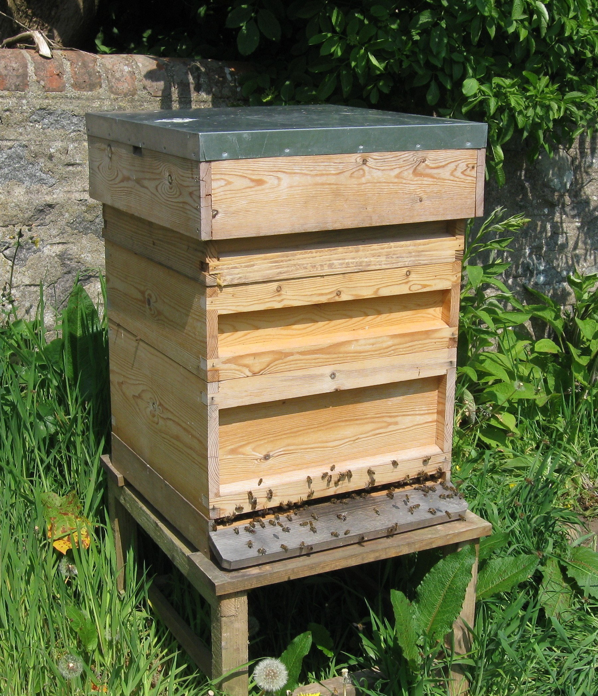
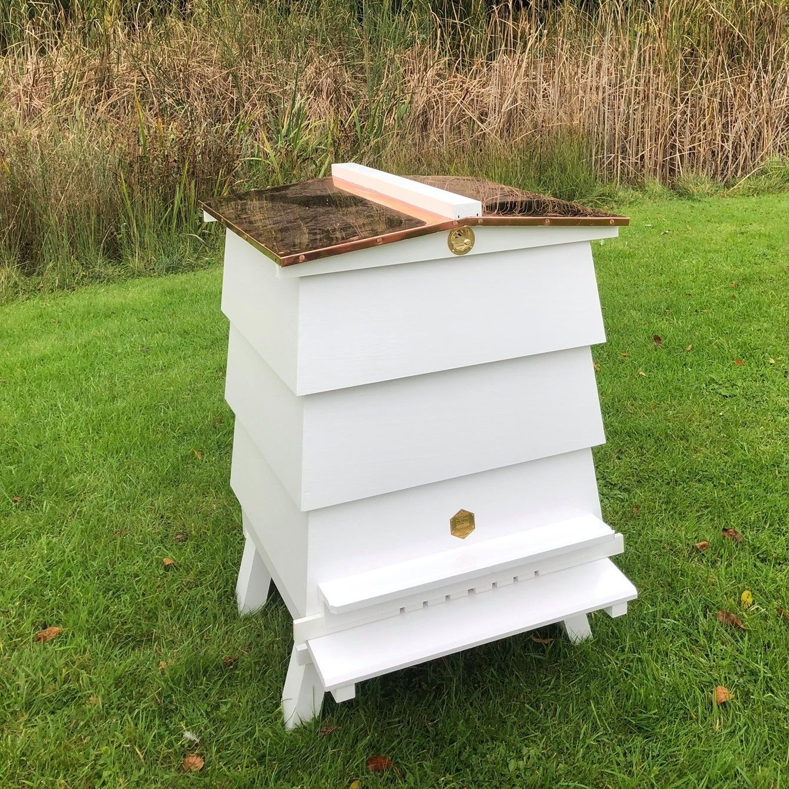
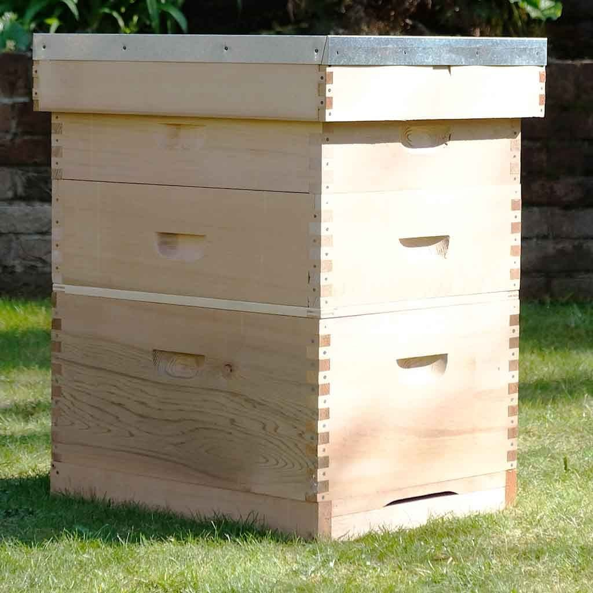

Types of hives
National
The national hive is probably the most common type of hive. It is a typical square shape with the outer dimensions being 460mm and the brood (where the bees build up their colony) being 225mm deep. The internal volume is around 35 litres. When the supers are added (the place where bees only store honey for our consumption) they add around 22 litres. Supers and brood boxes can be added on by simply stacking them where you want although weight consideration and maneuverability should be taken into account.
WBC
The WBC is named after Reverend William Broughton Carr who designed the hive in the late 19th century. Its main feature is an internal construction of boxes where the bees reside and an outer set of 'lifts' that provide weatherproofing and an attractive shape. The double-walled design creates insulation which allows the internal components to be made of a lighter material. This makes the hive more expensive and more complex to disassemble. The hive is more of a rectangle shape. The frame size is 355mm wide and 203mm deep. It has to use its own custom made supers.
Langstroth
The langstroth hive is probably the most popular design in the world. It is the standard hive in North and South America and Austrailia. It was made by Reverend Langstroth in 1851 and is reputed to have its dimensions based on a case of champaigne. It is of a rectangular shape. Due to its large production size it tends to be a cheaper model than the WBC and National. It also has many available modifications that are widely available. The frame size is around 457mm wide and 228mm deep. It has its own type of supers.
